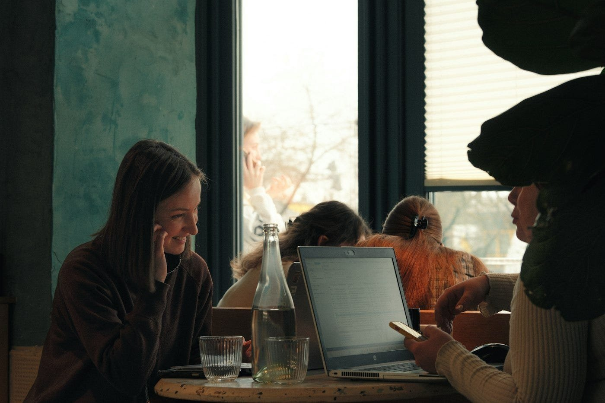
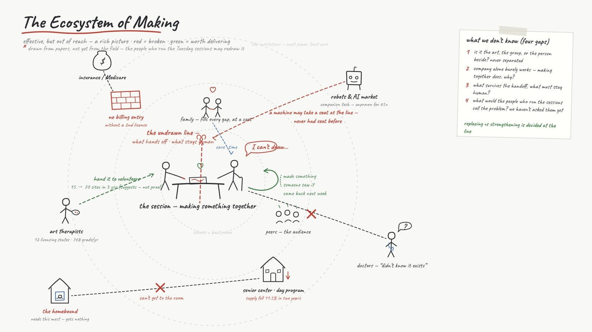
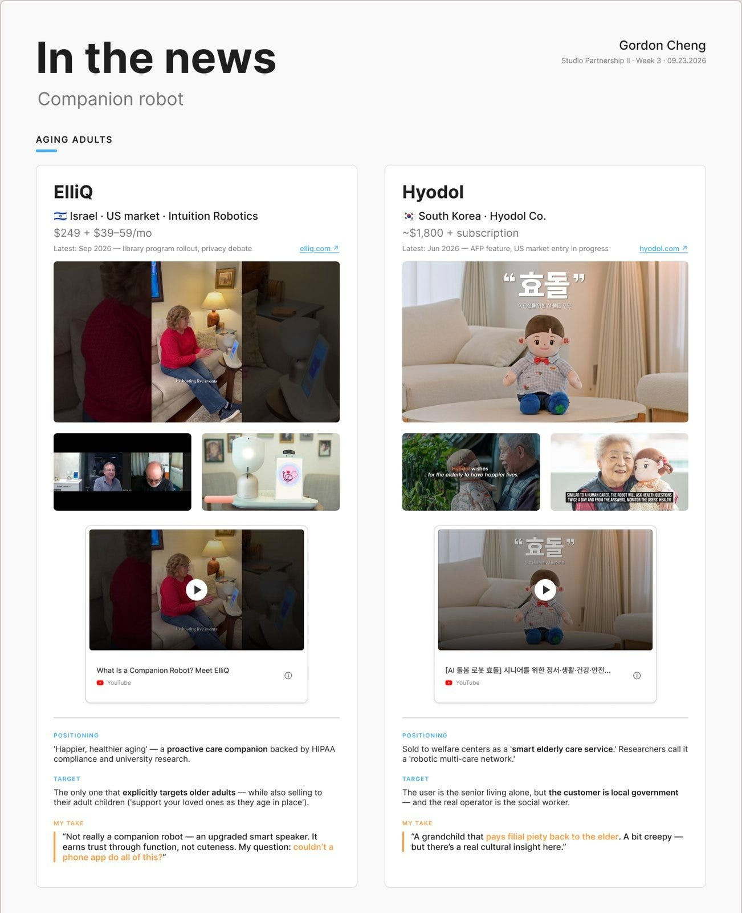
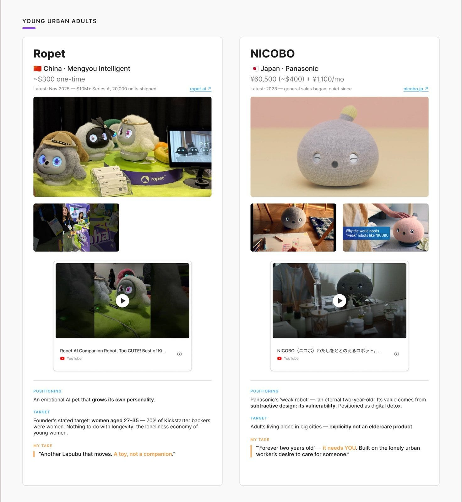
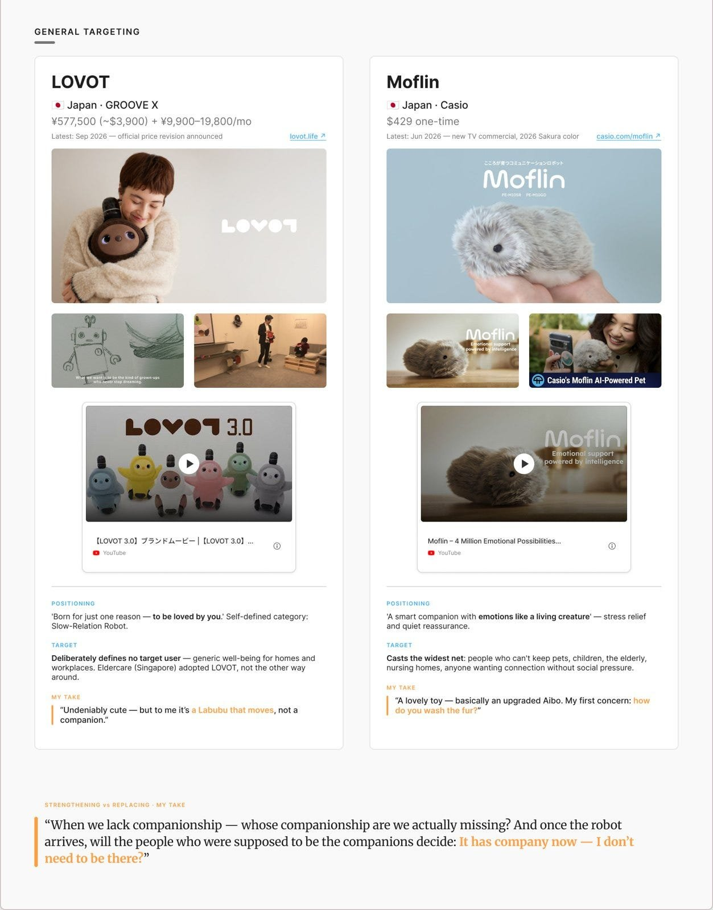
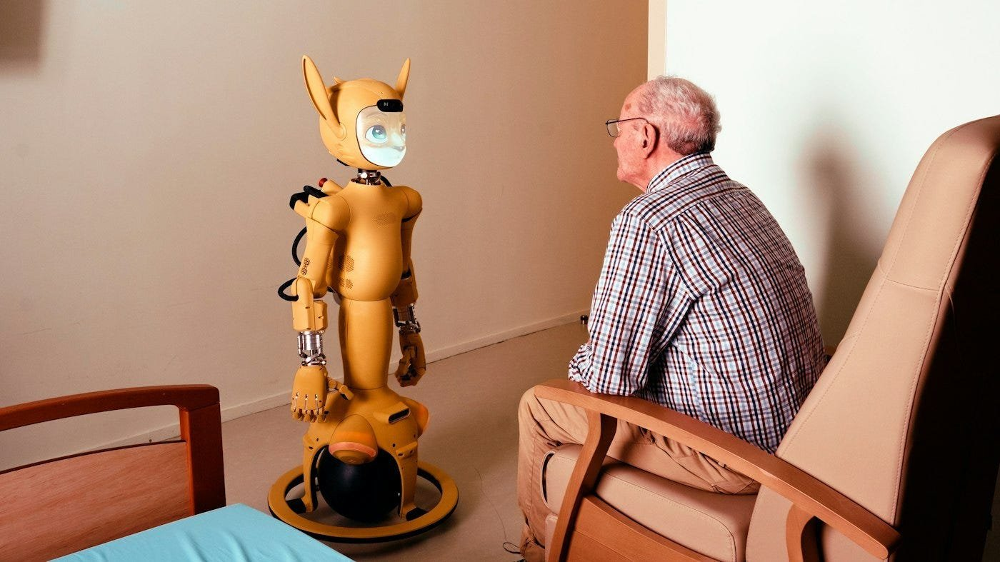
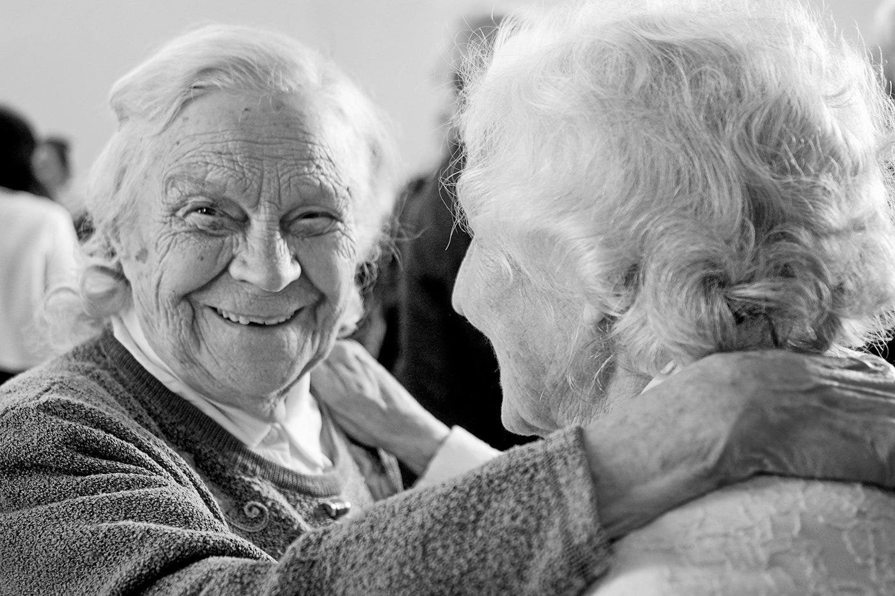

組隊、畫系統圖，還有市面上的陪伴機器人
這是我在 SVA MFA Interaction Design 修 Studio Partnership II 的每週日誌，整門課圍繞著 Stanford Center on Longevity Design Challenge 進行，跟我的論文系列文章分開。
Studio Partnership II 到了第三週，這個專案不再只有我一個人做了。我去找了兩個看事情角度跟我不一樣的人，也順利找到了。Abbie Lai 目前在 Emily Carr University 讀 MDes Interaction Design，以前是人類學家，看事情帶著研究員的眼光；Lesley Chung 在 SCAD 讀 UX Design，之前待過廣告公司，習慣用畫面思考。不過比起各自的背景，更重要其實就一件事，我們三個人都很在乎高齡者。上課前一晚我們碰了面，先把大方向定在藝術、高齡和機器人，至於具體要解決什麼問題，就先留著還沒定案。

我們鎖定的問題是高齡者的團體藝術活動。已經有確切的證據顯示，這類活動對改善憂鬱、認知能力跟孤獨感真的有用，但實際能接觸到的人卻非常少。原因在於每一場活動都高度仰賴吃緊的人力時間，通常是一位受過訓練的人帶著一小群長輩，每週一次，而且多半辦在機構裡面。光靠專業人力根本補不上這個缺口。全美沒幾個州有核發藝術治療師執照，每年畢業生只有幾百人，要申請保險給付通常還得具備第二張臨床執照。加上日間照護課程一直在縮減，那些出不了門的人更是完全分不到資源。不過有一個計畫讓事情變得複雜，而且是好的那種複雜。Opening Minds through Art 改讓只受訓幾小時、不必花好幾年養成的志工來取代有執照的治療師，結果三年內就從 15 個據點擴展到 70 個。可見裡面有一部分的工作是可以交出去的，只是具體哪些能交接，還沒有人盤點出來。
我們也畫出了這個系統的第一張地圖。正中央是一場活動，也就是大家聚在一起做點東西；圍繞在旁邊的有家人、同儕、藝術治療師、保險、長者中心、醫生，還有機器人市場。紅字標出來的是系統卡住的地方，包含沒有第二張執照就無法請領保險、日間課程不斷縮減，以及最需要卻什麼也得不到的出不了門長輩。圖中間還有一條紅色虛線，穿過中間那張桌子，代表那條還沒人畫出來的界線，用來區分哪些事可以交出去、哪些事非得留在人身上不可。這張圖上的所有內容都來自文獻，我們也把這點寫在圖上提醒自己，等到實際帶這些活動的人看過，整張圖很可能會被重新畫過。

「In the News」是這門課的固定環節。每週會有一兩位同學分享近期跟這個挑戰有關的新聞，做一段簡短的批判性評論，最後留一兩個問題給全班。規定不能用簡報。Pinar 給了我們兩個檢驗標準來看每則案例，看它是讓人變得更獨立，還是奪走了控制權？是強化了人際關係，還是直接取代了關係？
這週由我第一個分享。因為陪伴機器人最近正紅，我乾脆不講單一新聞，直接把整個市場攤開來聊。其中一款剛在華盛頓州獲准納入 Medicaid 給付，另一款則因為需求大增而漲了價。我把市面上真的買得到的產品全列出來，照它們號稱是做給誰用的來分類。對比最強烈的是 Hyodol 跟 NICOBO，前者是像孫子一樣照顧你的娃娃，後者則是像學步幼童一樣需要你去照顧的小生物。至於最接近成熟產品的 ElliQ，反而離我們一般認知的「陪伴」最遠。班上同學的反應跟我差不多，目前這些東西看起來還是有點毛毛的。



這也回到我自己的立場，以及我為什麼從頭到尾都對陪伴機器人抱著懷疑。這類機器人大多是為了接收人類的感情而設計的。但人到底能不能把真實的情感轉移到機器身上，這個問題對我來說太大了，我也不想把任何設計建立在這個前提上。我並不反對這項科技，也認為機器人和 AI 會是讓老後生活更快樂的一部分解答；我只是更希望它們把方向指往另一邊，把焦點從機器自己身上移開，去讓人跟人之間的連結變得比以前更順暢。手機把我們很多人變成了孤島，這一代的科技有機會把一座座孤島重新連起來。所以有人喜歡這台機器完全沒問題，但機器絕對不該讓人覺得它也愛你。

最後我留了兩個問題給全班。面對漫長的人生，哪一種力量比較強，是照顧你的機器人，還是讓你照顧的機器人？還有，當機器人來了之後，那些本來應該出現的人，會不會就覺得自己不必再來了？

那天晚上我們做了第一場訪談，受訪者剛從藝術治療領域畢業不久，之前在 Chinatown 帶過長輩的繪畫團體。這部分就留到下週再聊。